presented by:
Brian O'Kelly
TREE OF LIFE
Neurological Research Institute

Upper Body Innervation
⇄
Random Routine
← Back
Routine
Set your timing and rounds.
Seconds per movement
Time between movements (sec)
Rounds of routine
Audio
On
Start Routine
← Back
Routine
Follow the movements at your own pace.
Movement
Movement 1 of 1
Round 1 of 1
Ready
Start
Restart Routine